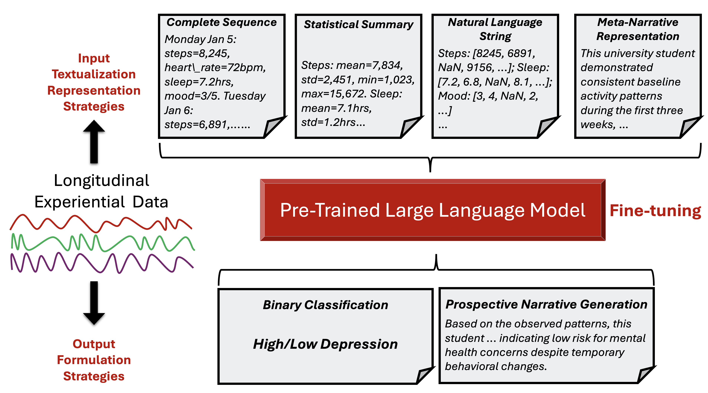
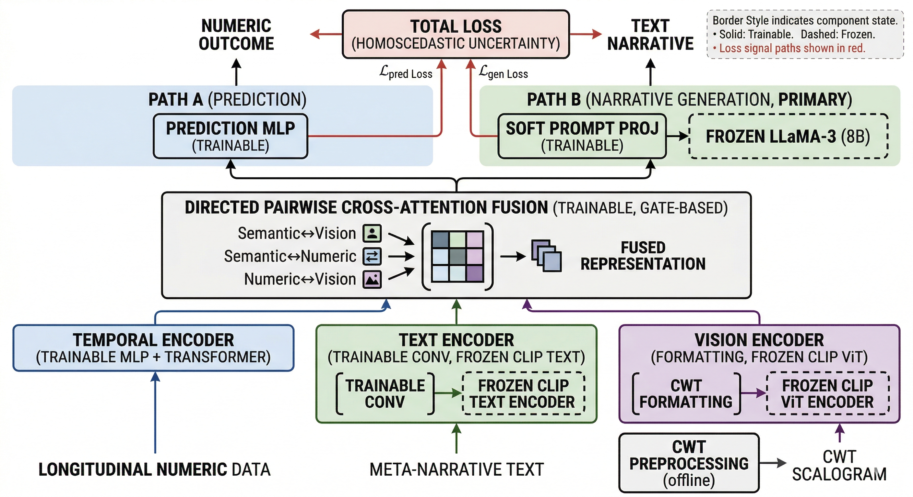

Maternal health
Working with the Kovacheva Lab to use multimodal clinical data for earlier identification of acute maternal risk and safer care at the bedside.
Reliable AI for high-stakes decisions
I develop trustworthy multimodal learning systems for longitudinal data. At the Kovacheva Lab, led by Vesela Kovacheva, MD, PhD, my current work focuses on maternal safety and clinical decision support. I join language, time-series, waveform, imaging, and health-record data to build models that are useful, rigorous, and human-centered.
01 / Research focus
My work investigates how to make machine learning systems generalize across people, settings, and time. I am especially interested in models that connect qualitative narratives with quantitative trajectories while remaining interpretable and dependable in consequential settings.
02 / Current work
Working with the Kovacheva Lab to use multimodal clinical data for earlier identification of acute maternal risk and safer care at the bedside.
Modeling engagement, confidence, and behavior from longitudinal experiential data with language and time-series methods.
Studying generalization, failure modes, and interpretation so models can earn their place in real workflows.
03 / Selected methods
Two examples of the research systems I have developed for modeling longitudinal experiential data, combining structured signals with language and visual representations.


04 / Selected updates